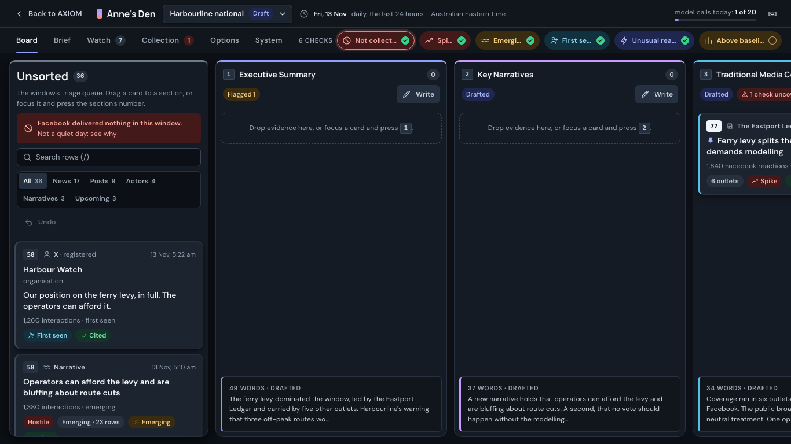

AThe Storyboard
Organised by the report, not the channel. Each brief section is a column holding the evidence assigned to it; opening a column turns it into that section's writing surface.
- Fixes
- Evidence and the brief living on separate tabs
- Look
- Studio pinboard: deep slate, raised cards, a colour per section